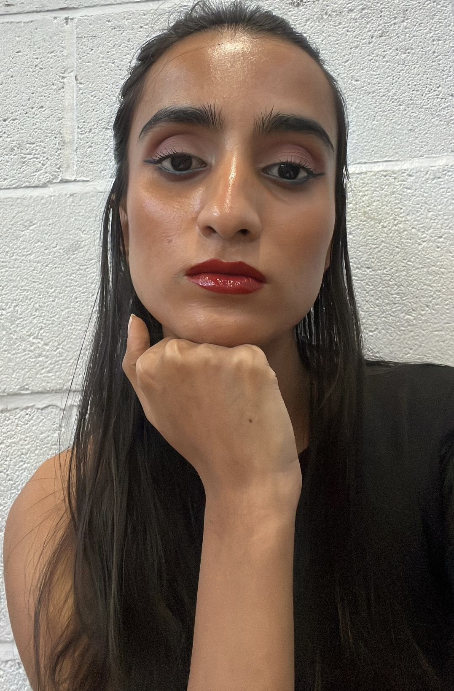

About me
I’m a Mathematics with Computer Science student at the University of Southampton with a strong interest in data analysis, statistics, and machine learning. My academic journey has led me to explore topics like statistics, programming, machine learning technologies, operational research, and pure mathematics. I am always eager to tackle challenges that require data-driven decision-making and mathematical insight.
